Epistemic SLAM · three agents · 30 × 50 m hall · ROS 2
A racking block crosses the hall, and the only ways from the storage floor to the dispatch floor are three pass-through bays in it, t1, t2 and t3. Exactly one is open; the other two hold staged loads. That much is common knowledge, and which bay is open is not. Two scouts carry twelve-metre mapping lasers, and a carrier with a 3.5 m safety scanner has to take a load through a bay it knows to be open.
What an agent knows about a bay comes from a map. A survey is read off the scout's own SLAM map and nothing else; an exchange is one robot's knowledge map fused into another's, applied to the model as an announcement; and the carrier's route is a least fixed point over a safe set that contains a bay exactly when the carrier knows it is open. In the recorded run both scouts find loads, the two maps together rule out two bays, and the carrier drives 43.1 m through t2: a bay no robot surveyed, of which the exchanges carried not one cell.
The building is common knowledge and only the bays are not: every robot is given the floor plan, with the three bay interiors left unknown. Localisation is the simulator's odometry, so the SLAM maps are records of observation and are not a test of SLAM. The radio is always up, and the robots act one after the other because the executor runs the policy in order. The epistemic state space is small by design: three worlds and a policy of depth five. The size is in the floor.
Package pass_through_demo; map fusion from epistemic_slam; formula evaluation from mu_path_planner; policy from eplansys. Full account in The Pass-Through Problem (PDF): the domain and a variant the planner exploits, the maps as knowledge, the route as the precondition, the three worlds, and every defect found on the way.
The run
| action | what the run reported | model after |
|---|---|---|
| plan | 9 nodes, 3 leaves, found in 0.2 s; the carrier is not in W(dock), which stops at the racking | 3 worlds, 3 designated |
| survey(east, t3) | east's own map over t3: 168 of 578 cells observed, 37 occupied; e-shut | 3 worlds, 2 designated |
| share-shut(east, carrier, t3) | 16 749 cells newly known to the carrier, 163 of them in t3 | 3 worlds, 2 designated |
| survey(west, t1) | west's own map over t1: 144 of 578 observed, 17 occupied; e-shut | 3 worlds, 1 designated |
| share-shut(west, carrier, t1) | 16 707 cells newly known, 144 in t1, 0 in t2 | 3 worlds, 1 designated |
| cross(carrier, t2) | t2 lifted into the safe set by knowledge; route 43.1 m; at the dock after 90 s | 1 world |
What the run shows
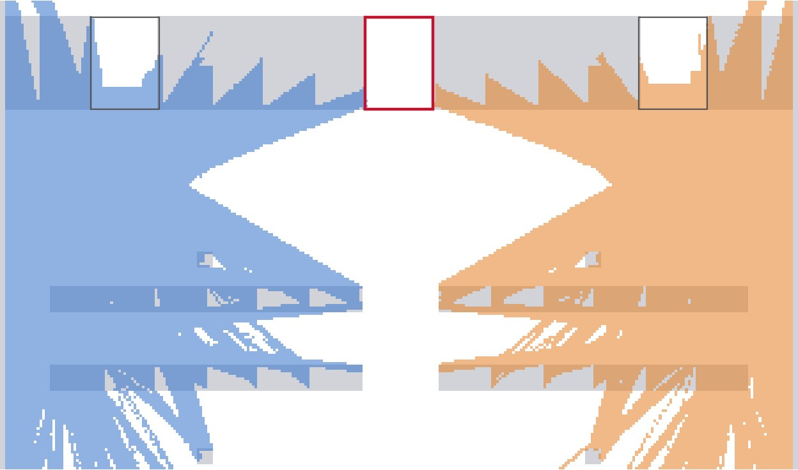
The model Known to the pair, and to neither After two surveys the scouts know t2 is open only jointly. Two exchanges that never mention t2 make it the carrier's. Step through the Kripke model →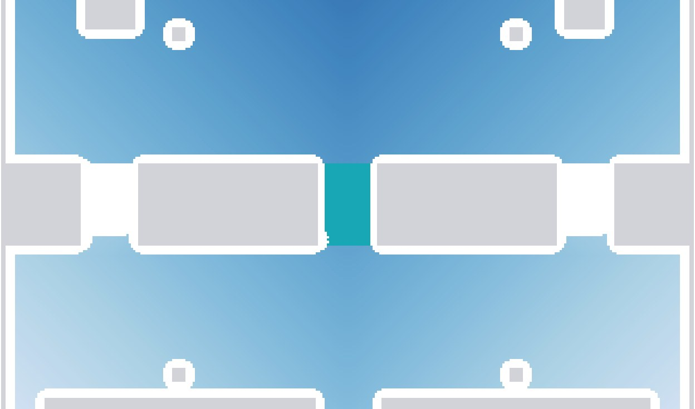
The route A route made of knowledge The fixed point stops at the racking after 327 iterations. One announcement later it runs 582 and reaches the carrier through a bay no map contains. See the fixed point →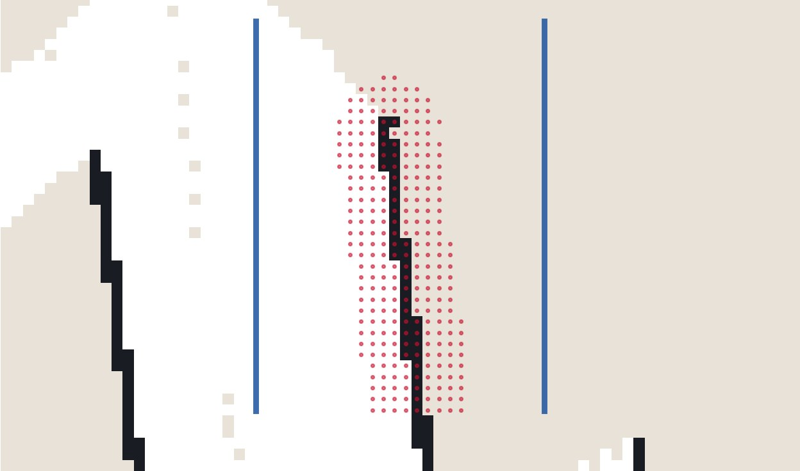
The map The map drifts, and the corridor narrows The carrier's own SLAM map slides west along the lane, draws t2's wall down the bay's centre, and cuts 277 of its 712 cells from the route. Read the grids →The problem
Agents west, east and carrier. The initial model has one world per bay, all three designated, with every relation total:
Each scout is stationed at the bay on its side, which is static and common knowledge. t2 opens onto the carrier's own lane and is covered by no one, so the only way anyone comes to know it is open is by ruling the other two out.
| action | type | events | observers |
|---|---|---|---|
| survey(i, t) | semi-private sensing | e-open: open(t) · e-shut: ¬open(t) | i fully, the rest partially |
| share-open(i, j, t) | semi-private announcement | Ki open(t) | i, j fully, the rest partially |
| share-shut(i, j, t) | semi-private announcement | Ki ¬open(t) | i, j fully, the rest partially |
| cross(i, t) | public ontic | pre hauls(i) ∧ Ki open(t); eff delivered | everyone |
The goal is delivered; its epistemic content is the precondition of cross. plank grounds the problem into 16 atoms and 72 ground actions, and Aletheia returns a policy of depth five with three leaves after 445 AO* expansions.
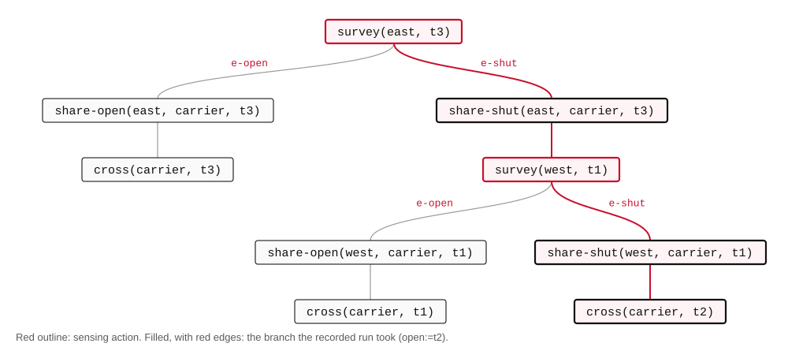
After the second survey of the third leaf,
The two scouts together know t2 is open and neither of them does. The two exchanges make it the carrier's: \(s \models K_{\mathit{carrier}}\,\mathit{open}(t_2)\), by elimination. The crossing is public, so every agent then sees the carrier go through, and the model collapses to one world.
The exchanges were first written as private announcements, and the planner then found a policy that should not exist. The model, action by action steps through it.
The epistemic actions
Every action of the domain is an event model: a set of events, each with a precondition and possibly a postcondition, and for every agent a relation saying which events that agent cannot tell apart. Executing it in a model \(M\) is the product update \(M \otimes E\): a world of the result is a pair of a world and an event whose precondition holds there, and two pairs are indistinguishable to an agent when it could not tell the worlds apart and cannot tell the events apart. Which agent observes what is therefore entirely a property of the relation on events, and the four diagrams below are the whole of the domain's dynamics.
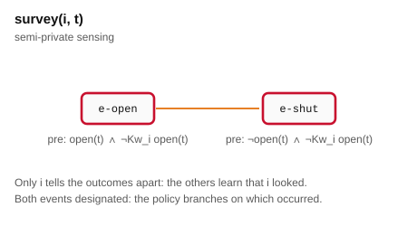
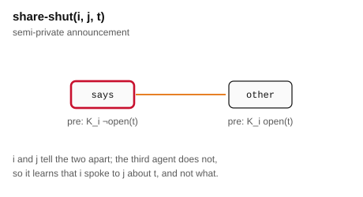
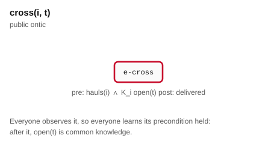
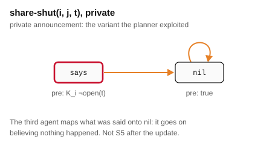
| action | |E| | designated | bound on |M ⊗ E| | what the third agent keeps |
|---|---|---|---|---|
| survey(i, t) | 2 | both | 2|W| | that i looked, not what it saw |
| share-shut(i, j, t) | 2 | one | 2|W| | that i spoke to j about t, not what |
| cross(i, t) | 1 | one | |W| | everything: the event is public |
| private variant | 2 | one | 2|W| | the belief that nothing happened |
Two properties of this set of actions carry the rest of the page. The sensing action designates both of its events, so the executor cannot apply it without being told which occurred; that is the point at which the policy branches, and the point at which a map has to supply the answer. And every non-public action lets the agents outside the audience relate its events to one another, which is what keeps each relation an equivalence. The one variant in which an outsider relates what happened to nil instead is the one the planner exploited, below.
The model, action by action
The figure steps through the model after every action of the branch the chosen world selects. A world is labelled by the bay open in it; a red ring marks a designated world, the planner's account of which worlds may be the actual one; a line in an agent's colour joins two worlds that agent cannot tell apart. The table reads the model as each agent sees it from the designated worlds, and adds the one reading no single agent has: distributed knowledge of the two scouts, which quantifies over the intersection of their relations.
On the t2 branch, three steps carry the argument. After east's survey the scouts' relations differ: east has separated the world where t3 is open from the other two, and west and the carrier have not, because sensing is semi-private. After west's survey the same holds with the roles exchanged, and the intersection of the two scouts' relations at the designated world contains exactly one world:
Neither exchange then mentions t2. Each removes one world from the carrier's relation, the one its speaker has ruled out, and after both the carrier's relation at the designated world is \(\{w_2\}\). That is \(K_{\mathit{carrier}}\,\mathit{open}(t_2)\), and it is the pair's distributed knowledge made individual. The size of the model never changes along the way: three worlds throughout, with only the designated set and the relations narrowing, until the public crossing collapses it to one.
The same stepper, over the policy the planner returned when the exchanges were private announcements. Follow the carrier's row. After the private exchange between the scouts the model has five worlds, and the carrier's relation leads only to copies in which nothing was said. After west then tells the carrier that west knows t3 is shut, the carrier's relation at the designated worlds is empty: no world it considered possible is one in which west could have said that. A box over an empty relation holds of every formula, so the carrier "knows" t1 is open, and the policy sends it through t1, which in that world is shut.
The models are computed by the product update of scenarios/warehouse/tools/show_plan.py from the task plank ground, along each branch of the returned policy. Their world and designated counts agree with the counts the epistemic state logged during the recorded run.
Epistemic SLAM
Each robot runs its own slam_toolbox, remapped off /map so that three mappers do not write one map; if they did, every observation would be public and the semi-private sensing of the domain would be a fiction. A knowledge node per robot keeps two grids on the floor plan's geometry.
| grid | holds | read by |
|---|---|---|
| own map | the robot's SLAM map, resampled | survey: a sensing action is the agent looking |
| knowledge map | the own map fused with every map the robot was sent | navigation, and the exchange check |
A bay is read under one quantifier: blocked when any cell of its corridor is occupied, clear when every cell has been observed free, and undecided otherwise. The corridor is the bay less the navigation's 0.35 m inflation from each wall, since a cell no route can use says nothing about whether the bay can be crossed. A load decides its bay from the mouth; an open bay does not, and a scout that stays undecided moves in along the axis over floor its own map already shows free, then backs out and parks off the carrier's approach.
An exchange is epistemic_slam::fuse of the sender's knowledge map into the receiver's. The reply counts the cells the receiver newly holds, over the grid and inside each bay, and the performer then checks the receiver's map against the announcement: the load after share-shut, the corridor free after share-open, or, when the speaker knew by elimination, nothing at all. In the recorded run the exchanges carried 163 cells of t3, 144 of t1, and none of t2.
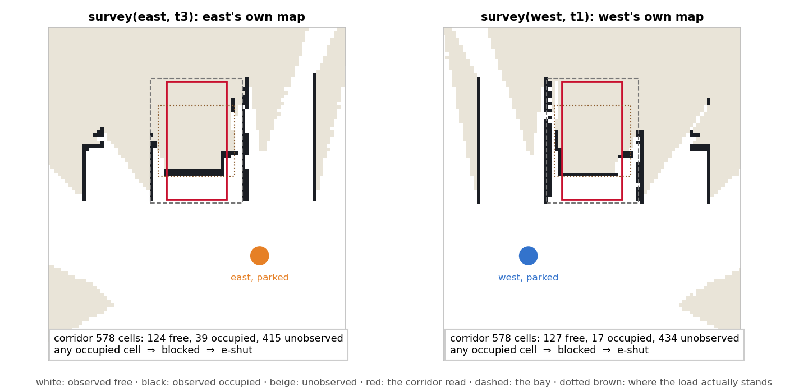
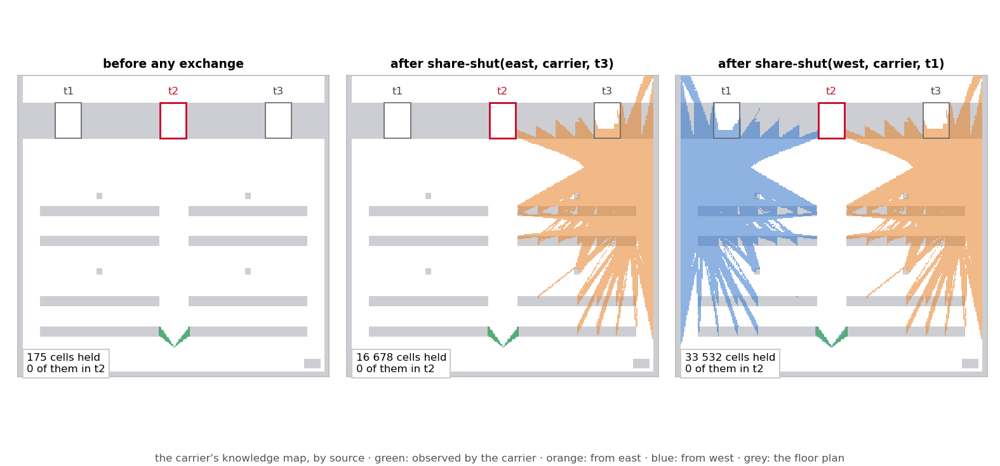
The route
cross drives the carrier along the winning region of
evaluated at every cell and world of the model the epistemic state publishes, by mu_path_planner's own formula evaluator, with each bay a zone. free reads the floor plan outside the bays and the carrier's knowledge map inside them. A bay the carrier has observed free is safe by the first disjunct; a bay it knows is open without having seen it is safe by the second, and RViz draws those cells in cyan; a bay it does not know about is in neither.
The precondition therefore holds twice and by independent roads. The executor checks \(K_{\mathit{carrier}}\,\mathit{open}(t)\) against the model before dispatching cross, and the route exists only because the safe set contains the bays the carrier knows to be open. Before the last exchange \(W\) is 51 428 cells after 327 iterations and stops at the racking; after it, 98 818 cells after 582 iterations, reaching the carrier through t2.
mu_reach computes the fixed point by Kleene iteration, recomputing the backward image of all of \(Z_k\) at every step, which on a 310 × 510 grid is tens of seconds. The package evaluates the same fixed point semi-naively, one visit per cell, and a unit test checks region and iteration count against mu_reach on sixty random floors.
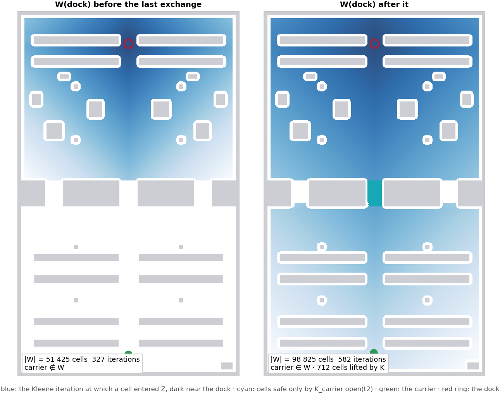
The carrier's own map
The carrier also maps as it drives, and its own map enters its knowledge map like any other. Along the lane it is correct at the south end and then slides west: the rack ends at \(x = \pm 1.5\) m are drawn in place at \(y = -18\), 0.3 m west at \(y = -12\), 0.45 m at \(y = -9\), and by the bay about a metre. A 3.5 m scanner in a three-metre lane between repeating racks gives slam_toolbox's scan matcher little to hold across the lane, and its correction accumulates there.
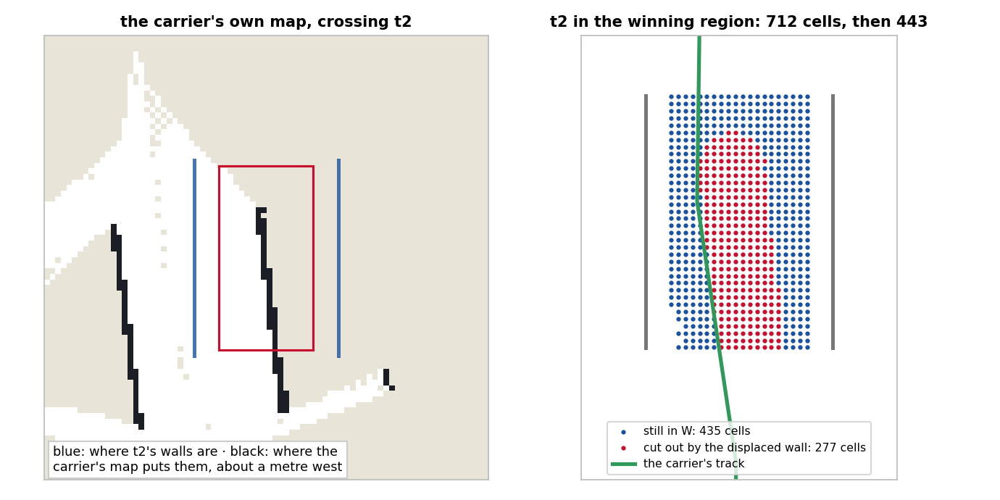
Inside t2 the displaced east wall runs down the middle of the bay. With the navigation's inflation around it, it removes a strip from the safe set: of the 712 cells of the bay in the winning region before the carrier sees it, 277 are cut out once its own scans arrive, and 435 remain, all west of the phantom wall. The carrier drove through that western strip, at \(x \approx -0.5\) m, and reached the dock.
The epistemic reading of this is exact, and it is the reason to draw it. The carrier knew t2 was open by elimination, from two maps that were right. When its own observation of the bay arrived, it was wrong, and the knowledge map merged it without question: \(\mathit{free}\) is read from that map inside the bays, so a misregistered wall is an obstacle to the fixed point exactly as a load is. The route survived because the bay is wider than the robot, not because anything reconciled what the carrier was told with what it saw.
Three worlds
The worlds differ by which two bays hold a load and by nothing else. Each ran headless to the goal.
| open | the scouts read | carrier's route | safe by | to the dock |
|---|---|---|---|---|
| t3 | east: t3 clear, 578 of 578 cells | 60.6 m through t3 | free (observed) | 112 s |
| t1 | east: t3 blocked; west: t1 clear, 578 of 578 | 60.7 m through t1 | free (observed) | 115 s |
| t2 | east: t3 blocked; west: t1 blocked | 43.1 m through t2 | Kcarrier open(t2) | 83 s |
From the standoff the scouts saw 471 and 453 of an open bay's 578 corridor cells, and moved in to see the rest. In the first two worlds the bay the carrier crosses is in its knowledge map, observed free, and the formula lifts nothing. The third is the only one in which a robot drives through a bay that no map contains.
The floor
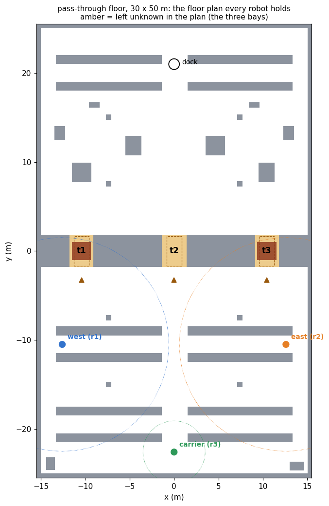
The hall is the 30 × 50 m Fuel warehouse; the racking and loads are AWS RoboMaker models. The world, the plan, the regions, the poses and the camera shots are written from one layout file, and the plan is refused unless the carrier cannot reach the dock while no bay is known, can through each bay once that bay is, a load closes its bay, and each scout reaches its bay's mouth and its parking place. Every placed model's collision mesh is also sliced at laser height and required to lie inside the box the plan draws for it.
That last check exists because of what it would have caught. The AWS shelf footprint was first taken from a table that gives it as 0.88 × 2.613 × 3.918 m; its collision mesh, read with its node transform and unit, is 3.918 × 0.88 × 2.64. Every unit stood a quarter turn from the plan, the block was a row of columns with 1.7 m gaps, and it was found when the carrier stopped against the south end of a column the plan said was not there. The table is also used by the larger warehouse demonstrations and has not been corrected there.
Reproduction
ros2 launch pass_through_demo pass_through_launch.py # open:=t2 ros2 launch pass_through_demo pass_through_launch.py open:=t3 bash tools/validate.sh # plank and Aletheia, no simulator bash tools/record_demo.sh t2 /tmp/raw.mkv /tmp/run.log # Xvfb, Gazebo left, RViz right python3 tools/make_video.py --raw /tmp/raw.mkv --log /tmp/run.log \ --policy /tmp/raw_policy.json --out /tmp/pass_through.mp4